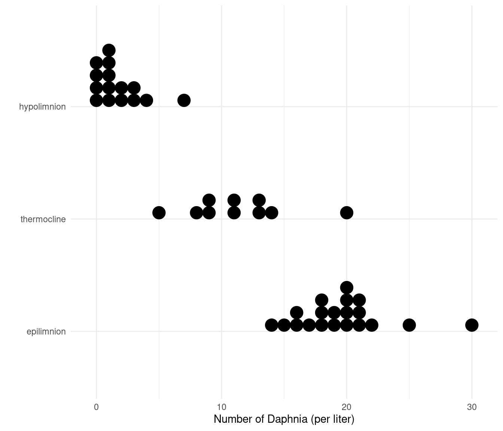

You can also download a PDF copy of this lecture.
A GLM with a log link function, like a Poisson regression model, has the form \[ \log E(Y_i) = \beta_0 + \beta_1 x_{i1} + \beta_2 x_{i2} + \cdots + \beta_k x_{ik}, \] or \[ E(Y_i) = \exp(\beta_0 + \beta_1 x_{i1} + \beta_2 x_{i2} + \cdots + \beta_k x_{ik}), \]
which can also be written as a “multiplicative model” of the form \[ E(Y_i) = e^{\beta_0}e^{\beta_1 x_{i1}}e^{\beta_2 x_{i2}} \cdots e^{\beta_k x_{ik}}. \] Recall that \(e^{a+b} = e^ae^b\). For this reason the parameters \(\beta_1, \beta_2, \dots, \beta_k\) or linear functions thereof are not interpreted the same way as in the additive model \[ E(Y_i) = \beta_0 + \beta_1 x_{i1} + \beta_2 x_{i2} + \cdots + \beta_k x_{ik}, \] but they are still relatively easy to interpret in terms of multiplicative rather than additive changes in \(E(Y)\).
Consider the model \[ \log E(Y) = \beta_0 + \beta_1 x, \] and let \[ \log E(Y_a) = \beta_0 + \beta_1 (x+1) \ \ \ \text{and} \ \ \ \log E(Y_b) = \beta_0 + \beta_1 x \] for an arbitrary value of \(x\). Then the difference in the log of the expected values is \[ \log E(Y_a) - \log E(Y_b) = \underbrace{\beta_0 + \beta_1 (x+1)}_{\log E(Y_a)} - \underbrace{(\beta_0 + \beta_1 x)}_{\log E(Y_b)} = \beta_1, \] meaning that \(\beta_1\) is the additive change in \(\log E(Y)\) per unit increase in \(x\).
Now consider the same model written as \[ E(Y) = e^{\beta_0}e^{\beta_1 x}, \] and let \[ E(Y_a) = e^{\beta_0}e^{\beta_1 (x+1)} \ \ \ \text{and} \ \ \ E(Y_b) = e^{\beta_0}e^{\beta_1 x} \] for an arbitrary value of \(x\). Then the ratio of the expected values is \[ \frac{E(Y_a)}{E(Y_b)} = \frac{\overbrace{e^{\beta_0}e^{\beta_1 (x+1)}}^{E(Y_a)}}{\underbrace{e^{\beta_0}e^{\beta_1 x}}_{E(Y_b)}} = \frac{e^{\beta_0}e^{\beta_1 x}e^{\beta_1}}{e^{\beta_0}e^{\beta_1 x}} = e^{\beta_1} \Rightarrow E(Y_a) = E(Y_b)e^{\beta_1}, \] so that \(E(Y)\) changes by a factor of \(e^{\beta_1}\) per unit increase in \(x\). The “exponentiated” parameter, \(e^{\beta_1}\), is sometimes called a “rate ratio” because it is often the ratio of two rates when the counts are per unit space, time, or something else.
Example: Consider again the
ceriodaphniastrain data and model.
library(trtools)
ceriodaphniastrain$strainf <- factor(ceriodaphniastrain$strain,
labels = c("a","b"))
m <- glm(count ~ concentration + strainf,
family = poisson, data = ceriodaphniastrain) # log link is default
cbind(summary(m)$coefficients, confint(m)) Estimate Std. Error z value Pr(>|z|) 2.5 % 97.5 %
(Intercept) 4.455 0.03914 113.819 0.000e+00 4.377 4.5306
concentration -1.543 0.04660 -33.111 2.057e-240 -1.635 -1.4522
strainfb -0.275 0.04837 -5.684 1.313e-08 -0.370 -0.1803exp(cbind(coef(m), confint(m))) # coef extracts the parameter estimates only 2.5 % 97.5 %
(Intercept) 86.0252 79.6152 92.817
concentration 0.2137 0.1950 0.234
strainfb 0.7596 0.6907 0.835Note: It only makes sense to apply the exponential function to the point estimates and the endpoints of the confidence interval. A standard error of \(e^{\hat\beta_1}\) could be obtained, but it is not equal to the exponentiated standard error of \(\hat\beta_1\). A test concerning \(e^{\beta_1}\) can be done using either the confidence interval or by stated the hypotheses in terms of \(\beta_1\) (e.g., the null hypothesis that \(e^{\beta_1} = 1\) is the same as the null hypothesis that \(\beta_1 = 0\)).
Another approach is to use lincon and the
tf (transformation function) argument.
lincon(m, tf = exp) estimate lower upper
(Intercept) 86.0252 79.6730 92.8838
concentration 0.2137 0.1951 0.2342
strainfb 0.7596 0.6909 0.8351Note that the confidence interval endpoints are not quite the same as
what we obtained using confint. This is because
confint and lincon use different approaches to
confidence intervals (more on that later).
Example: Consider a model for the expected number of matings of African elephants as a function of age.
library(Sleuth3)
head(case2201) Age Matings
1 27 0
2 28 1
3 28 1
4 28 1
5 28 3
6 29 0m <- glm(Matings ~ Age, family = poisson, data = case2201)
cbind(summary(m)$coefficients, confint(m)) Estimate Std. Error z value Pr(>|z|) 2.5 % 97.5 %
(Intercept) -1.58201 0.54462 -2.905 3.675e-03 -2.66670 -0.52893
Age 0.06869 0.01375 4.997 5.812e-07 0.04168 0.09564exp(cbind(m$coefficients, confint(m))) 2.5 % 97.5 %
(Intercept) 0.2056 0.06948 0.5892
Age 1.0711 1.04256 1.1004The percent change in the expected response is \[
100\% \times \left[\frac{E(Y_a)-E(Y_b)}{E(Y_b)}\right] = 100\% \times
\left[E(Y_a)/E(Y_b) - 1\right],
\]
where \(E(Y_a)\) and \(E(Y_b)\) are the expected responses at two
different points (\(a\) and \(b\)) defined in terms of the explanatory
variable(s).
Note that if this is positive then it is a percent increase, whereas if it is negative then it is a percent decrease.
The ratio \(E(Y_a)/E(Y_b)\) is the rate ratio.
Example: Suppose we have the model \(\log E(Y) = \beta_0 + \beta_1 x\) where
\(x\) is a quantitative variable and
\(\beta_1 = 0.22\). Then \(e^{\beta_1} \approx 1.25\). So when \(x\) increases by one unit (i.e., to \(x + 1\)), — i.e., from \(E(Y_b) = e^{\beta_0}e^{\beta_1x}\) to \(E(Y_a) = e^{\beta_0}e^{\beta_1(x+1)}\) then
the expected response increases by a factor of \[
E(Y_a)/E(Y_b) = e^{\beta_1} \approx 1.25,
\] and because \[
100\% \times \left[1.25 - 1\right] = 25\%.
\]
we can say that it increases by 25%.
Example: Consider again the model for the elephant matings data.
m <- glm(Matings ~ Age, family = poisson, data = case2201)
exp(cbind(m$coefficients, confint(m))) 2.5 % 97.5 %
(Intercept) 0.2056 0.06948 0.5892
Age 1.0711 1.04256 1.1004The percent change in the expected count per unit (year) increase in Age is approximately 100%(1.07 - 1) = 7% (i.e., a 7% increase).
Example: Suppose we have the model \(\log E(Y) = \beta_0 + \beta_1 x\) where
\(x\) is a quantitative variable and
\(\beta_1 = -0.22\). Then \(e^{\beta_1} \approx 0.8\). So when \(x\) increases by one unit (i.e., to \(x + 1\)), — i.e., from \(E(Y_b) = e^{\beta_0}e^{\beta_1x}\) to \(E(Y_a) = e^{\beta_0}e^{\beta_1(x+1)}\) then
the expected response decreases by a factor of \[
E(Y_a)/E(Y_b) = e^{\beta_1} \approx 0.8,
\] or because \[
100\% \times \left[0.8 - 1\right] = -20\%
\]
we can say that it decreases by 20%.
Example: Consider again the model for the
ceriodaphniastrain data.
m <- glm(count ~ concentration + strainf, family = poisson, data = ceriodaphniastrain)
exp(cbind(coef(m), confint(m))) 2.5 % 97.5 %
(Intercept) 86.0252 79.6152 92.817
concentration 0.2137 0.1950 0.234
strainfb 0.7596 0.6907 0.835The percent change in the expected count per unit increase in concentration is approximately 100%(0.21 - 1) = -79% (i.e., a 79% decrease or reduction).
Consider the model \[ \log E(Y) = \beta_0 + \beta_1 x, \ \ \text{or, equivalently,} \ \ E(Y) = e^{\beta_0}e^{\beta_1 x}, \] where \[ x = \begin{cases} 1, & \text{if the observation is in group $a$}, \\ 0, & \text{if the observation is in group $b$}. \end{cases} \] Then \[ E(Y) = \begin{cases} e^{\beta_0}e^{\beta_1}, & \text{if the observation is in group $a$}, \\ e^{\beta_0}, & \text{if the observation is in group $b$}. \end{cases} \] Let \[ E(Y_a) = e^{\beta_0}e^{\beta_1} \ \ \ \text{and} \ \ \ E(Y_b) = e^{\beta_0}. \] Then the ratio of the expected values is \[ \frac{E(Y_a)}{E(Y_b)} = \frac{e^{\beta_0}e^{\beta_1}}{e^{\beta_0}} = e^{\beta_1} \Leftrightarrow E(Y_a) = E(Y_b)e^{\beta_1} \] so that \(E(Y_a)\) is \(e^{\beta_1}\) times that of \(E(Y_b)\). Also \[ \frac{E(Y_b)}{E(Y_a)} = \frac{e^{\beta_0}}{e^{\beta_0}e^{\beta_1}} = \frac{1}{e^{\beta_1}} = e^{-\beta_1}. \] so that \(E(Y_b)\) is \(1/e^{\beta_1}\) times that of \(E(Y_a)\).
Example: Consider again the
ceriodaphniastrain data and model.
m <- glm(count ~ concentration + strainf,
family = poisson, data = ceriodaphniastrain)
cbind(summary(m)$coefficients, confint(m)) Estimate Std. Error z value Pr(>|z|) 2.5 % 97.5 %
(Intercept) 4.455 0.03914 113.819 0.000e+00 4.377 4.5306
concentration -1.543 0.04660 -33.111 2.057e-240 -1.635 -1.4522
strainfb -0.275 0.04837 -5.684 1.313e-08 -0.370 -0.1803exp(cbind(coef(m), confint(m))) 2.5 % 97.5 %
(Intercept) 86.0252 79.6152 92.817
concentration 0.2137 0.1950 0.234
strainfb 0.7596 0.6907 0.835Alternatively we can parameterize the model.
ceriodaphniastrain$strainf <- relevel(ceriodaphniastrain$strainf, ref = "b")
m <- glm(count ~ concentration + strainf,
family = poisson, data = ceriodaphniastrain)
cbind(summary(m)$coefficients, confint(m)) Estimate Std. Error z value Pr(>|z|) 2.5 % 97.5 %
(Intercept) 4.180 0.04303 97.137 0.000e+00 4.0945 4.263
concentration -1.543 0.04660 -33.111 2.057e-240 -1.6349 -1.452
strainfa 0.275 0.04837 5.684 1.313e-08 0.1803 0.370exp(cbind(coef(m), confint(m))) 2.5 % 97.5 %
(Intercept) 65.3444 60.008 71.034
concentration 0.2137 0.195 0.234
strainfa 1.3165 1.198 1.448Example: Consider these data from a stratified random sampling design and a Poisson regression model.
library(trtools)
p <- ggplot(daphniastrat, aes(x = layer, y = count)) +
geom_dotplot(binaxis = "y", binwidth = 1) +
coord_flip() + theme_minimal() +
labs(x = "", y = "Number of Daphnia (per liter)")
plot(p)
daphniastrat$layer <- relevel(daphniastrat$layer, ref = "thermocline")
m <- glm(count ~ layer, family = poisson, data = daphniastrat)
summary(m)$coefficients Estimate Std. Error z value Pr(>|z|)
(Intercept) 2.4248 0.09407 25.776 1.648e-146
layerepilimnion 0.5456 0.10683 5.107 3.272e-07
layerhypolimnion -1.8748 0.21751 -8.619 6.745e-18exp(cbind(coef(m), confint(m))) 2.5 % 97.5 %
(Intercept) 11.3000 9.34251 13.5134
layerepilimnion 1.7257 1.40501 2.1367
layerhypolimnion 0.1534 0.09808 0.2309The percent change in the expected response is \[
100\% \times \left[\frac{E(Y_a)-E(Y_b)}{E(Y_b)}\right] = 100\% \times
\left[E(Y_a)/E(Y_b) - 1\right],
\]
where \(E(Y_a)\) and \(E(Y_b)\) are the expected responses at two
different points (\(a\) and \(b\)) defined in terms of the explanatory
variable(s).
Note that if this is positive then \(E(Y_a)\) is that percent larger than \(E(Y_b)\), whereas if this is negative then \(E(Y_b)\) is that percent smaller than \(E(Y_a)\).
The ratio \(E(Y_a)/E(Y_b)\) is the rate ratio.
Example: Suppose we have the model \(\log E(Y) = \beta_0 + \beta_1 x\) where
\(x\) is an indicator variable for
category \(a\) and \(\beta_1 = 0.22\). Then \(e^{\beta_1} \approx 1.25\), \(E(Y_a) = e^{\beta_0}e^{\beta_1}\) and \(E(Y_b) = e^{\beta_0}\), and \(E(Y_a)\) is about 1.25 times
larger than \(E(Y_b)\) because
\[
E(Y_a)/E(Y_b) = e^{\beta_1} \approx 1.25,
\] and because \[
100\% \times \left[1.25 - 1\right] = 25\%.
\]
we can say that \(E(Y_a)\) is about 25%
larger than \(E(Y_b)\).
Example: Suppose we have the model \(\log E(Y) = \beta_0 + \beta_1 x\) where
\(x\) is an indicator variable for
category \(a\) and \(\beta_1 = -0.22\). Then \(e^{\beta_1} \approx 0.8\), \(E(Y_a) = e^{\beta_0}e^{\beta_1}\) and \(E(Y_b) = e^{\beta_0}\), and \(E(Y_a)\) is about 0.8 times
smaller than \(E(Y_b)\)
because \[
E(Y_a)/E(Y_b) = e^{\beta_1} \approx 0.8,
\] and because \[
100\% \times \left[0.8 - 1\right] = -20\%.
\]
we can say that \(E(Y_a)\) is about 20%
smaller than \(E(Y_b)\).
Example: Consider again the model for the daphnia data.
exp(cbind(coef(m), confint(m))) 2.5 % 97.5 %
(Intercept) 11.3000 9.34251 13.5134
layerepilimnion 1.7257 1.40501 2.1367
layerhypolimnion 0.1534 0.09808 0.2309The expected number of daphnia per liter in the epilimnion layer is estimated to be about 100%(1.73-1) = 73% more than in the thermocline layer. And because 100%(0.15-1) = -85% we estimate that the the expected number of daphia per liter in the hypolimnion layer is 85% less than it is in the thermocline layer.
With a log link function a “contrast” as produced by the
contrast function has the general form \[
\log E(Y_a) - \log E(Y_b) = \log\left[\frac{E(Y_a)}{E(Y_b)}\right],
\] where the indices \(a\) and
\(b\) denote specific values of the
explanatory variables. If we apply the exponential function to the
contrast then it becomes \[
\exp[\log E(Y_a) - \log E(Y_b)] = \frac{E(Y_a)}{E(Y_b)},
\] So applying the exponential function to contrasts allows us to
interpret them as ratios.
Example: Consider again the stratified random
sampling design. Suppose we want to compare the epilimnion and
thermocline layers to the hypolimnion layer. We can use
contrast and apply the exponential function
(exp in R) through the argument tf (for
“transformation function”). Note that this function is only applied to
the estimates and the confidence intervals.
trtools::contrast(m,
a = list(layer = c("epilimnion","thermocline")),
b = list(layer = "hypolimnion"),
cnames = c("epil vs hypo","therm vs hypo")) estimate se lower upper tvalue df pvalue
epil vs hypo 2.420 0.2025 2.023 2.817 11.950 Inf 6.519e-33
therm vs hypo 1.875 0.2175 1.448 2.301 8.619 Inf 6.745e-18trtools::contrast(m,
a = list(layer = c("epilimnion","thermocline")),
b = list(layer = "hypolimnion"),
cnames = c("epil/hypo","therm/hypo"), tf = exp) estimate lower upper
epil/hypo 11.250 7.564 16.733
therm/hypo 6.519 4.256 9.985The following gives us inferences for the logarithm of the expected count for each layer.
trtools::contrast(m, a = list(layer = c("epilimnion","thermocline","hypolimnion")),
cnames = c("epilimnion","thermocline","hypolimnion")) estimate se lower upper tvalue df pvalue
epilimnion 2.970 0.05064 2.8712 3.0697 58.661 Inf 0.000e+00
thermocline 2.425 0.09407 2.2404 2.6092 25.776 Inf 1.648e-146
hypolimnion 0.550 0.19612 0.1657 0.9344 2.805 Inf 5.036e-03To produce the estimates of the expected counts we need to apply the exponential function.
trtools::contrast(m, a = list(layer = c("epilimnion","thermocline","hypolimnion")),
cnames = c("epilimnion","thermocline","hypolimnion"), tf = exp) estimate lower upper
epilimnion 19.500 17.658 21.535
thermocline 11.300 9.397 13.588
hypolimnion 1.733 1.180 2.546The emmeans package can also produce inferences for
expected counts and rate ratios for categorical explanatory variables if
we specify type = "response".
library(emmeans)
emmeans(m, ~ layer, type = "response") layer rate SE df asymp.LCL asymp.UCL
thermocline 11.30 1.063 Inf 9.40 13.59
epilimnion 19.50 0.987 Inf 17.66 21.54
hypolimnion 1.73 0.340 Inf 1.18 2.55
Confidence level used: 0.95
Intervals are back-transformed from the log scale pairs(emmeans(m, ~ layer), type = "response", adjust = "none", infer = TRUE) contrast ratio SE df asymp.LCL asymp.UCL null z.ratio p.value
thermocline / epilimnion 0.579 0.0619 Inf 0.47 0.714 1 -5.107 <.0001
thermocline / hypolimnion 6.519 1.4180 Inf 4.26 9.985 1 8.619 <.0001
epilimnion / hypolimnion 11.250 2.2787 Inf 7.56 16.733 1 11.950 <.0001
Confidence level used: 0.95
Intervals are back-transformed from the log scale
Tests are performed on the log scale Another tool that you can use if you want inferences about the
expected response is the glmint function from the
trtools package.
d <- data.frame(layer = c("epilimnion","thermocline","hypolimnion"))
glmint(m, newdata = d) # syntax similar to predict and nlsint fit low upp
1 19.500 17.658 21.535
2 11.300 9.397 13.588
3 1.733 1.180 2.546Example: Consider again the model for the
ceriodaphniastrain data. Consider first the effect of
increasing concentration by one percent.
m <- glm(count ~ concentration + strainf,
family = poisson, data = ceriodaphniastrain)
summary(m)$coefficients Estimate Std. Error z value Pr(>|z|)
(Intercept) 4.180 0.04303 97.137 0.000e+00
concentration -1.543 0.04660 -33.111 2.057e-240
strainfa 0.275 0.04837 5.684 1.313e-08exp(cbind(coef(m), confint(m))) 2.5 % 97.5 %
(Intercept) 65.3444 60.008 71.034
concentration 0.2137 0.195 0.234
strainfa 1.3165 1.198 1.448We can estimate the rate ratio for a one unit increase in concentration for each strain.
trtools::contrast(m,
a = list(concentration = 1, strainf = c("a","b")),
b = list(concentration = 0, strainf = c("a","b")),
cnames = c("a","b"), tf = exp) estimate lower upper
a 0.2137 0.1951 0.2342
b 0.2137 0.1951 0.2342Here is how we can do that with the emmeans package. This statement will give us the expected response for concentrations one unit apart for each strain.
emmeans(m, ~concentration|strainf, at = list(concentration = c(1,0)), type = "response")strainf = b:
concentration rate SE df asymp.LCL asymp.UCL
1 14.0 0.608 Inf 12.8 15.2
0 65.3 2.812 Inf 60.1 71.1
strainf = a:
concentration rate SE df asymp.LCL asymp.UCL
1 18.4 0.730 Inf 17.0 19.9
0 86.0 3.367 Inf 79.7 92.9
Confidence level used: 0.95
Intervals are back-transformed from the log scale Now we can compare them.
pairs(emmeans(m, ~concentration|strainf, at = list(concentration = c(1,0)),
type = "response"), infer = TRUE)strainf = b:
contrast ratio SE df asymp.LCL asymp.UCL null z.ratio p.value
concentration1 / concentration0 0.214 0.00996 Inf 0.195 0.234 1 -33.110 <.0001
strainf = a:
contrast ratio SE df asymp.LCL asymp.UCL null z.ratio p.value
concentration1 / concentration0 0.214 0.00996 Inf 0.195 0.234 1 -33.110 <.0001
Confidence level used: 0.95
Intervals are back-transformed from the log scale
Tests are performed on the log scale We can estimate the rate ratio comparing the strains at difference concentrations.
trtools::contrast(m,
a = list(concentration = c(0, 1, 2), strainf = "a"),
b = list(concentration = c(0, 1, 2), strainf = "b"),
cnames = c("0%", "1%", "2%"), tf = exp) estimate lower upper
0% 1.316 1.197 1.447
1% 1.316 1.197 1.447
2% 1.316 1.197 1.447We can also use contrast to estimate the expected count
for, say, strain a at different concentration values.
trtools::contrast(m, a = list(concentration = c(0, 1, 2), strainf = "a"),
cnames = c("0%", "1%", "2%"), tf = exp) estimate lower upper
0% 86.025 79.673 92.884
1% 18.385 17.010 19.873
2% 3.929 3.378 4.571We can also use the emmeans package for inferences about expected counts and rate ratios for categorical explanatory variables.
library(emmeans)
emmeans(m, ~ strainf, type = "response",
at = list(concentration = 0)) strainf rate SE df asymp.LCL asymp.UCL
b 65.3 2.81 Inf 60.1 71.1
a 86.0 3.37 Inf 79.7 92.9
Confidence level used: 0.95
Intervals are back-transformed from the log scale pairs(emmeans(m, ~ strainf, type = "response",
at = list(concentration = 0)), reverse = TRUE) contrast ratio SE df null z.ratio p.value
a / b 1.32 0.0637 Inf 1 5.684 <.0001
Tests are performed on the log scale Now suppose we add an interaction between concentration and strain.
m <- glm(count ~ concentration + strainf + concentration:strainf,
family = poisson, data = ceriodaphniastrain)
summary(m)$coefficients Estimate Std. Error z value Pr(>|z|)
(Intercept) 4.1444 0.05101 81.252 0.000e+00
concentration -1.4725 0.07007 -21.015 4.800e-98
strainfa 0.3367 0.06704 5.022 5.114e-07
concentration:strainfa -0.1253 0.09385 -1.336 1.817e-01trtools::contrast(m,
a = list(concentration = 1, strainf = c("a","b")),
b = list(concentration = 0, strainf = c("a","b")),
cnames = c("a","b"), tf = exp) estimate lower upper
a 0.2023 0.1790 0.2287
b 0.2293 0.1999 0.2631trtools::contrast(m,
a = list(concentration = c(0, 1, 2), strainf = "a"),
b = list(concentration = c(0, 1, 2), strainf = "b"),
cnames = c("0%", "1%", "2%"), tf = exp) estimate lower upper
0% 1.400 1.2279 1.597
1% 1.235 1.0816 1.411
2% 1.090 0.8132 1.460Now the rate ratio for concentration depends on strain and the rate ratio for strain depends on concentration when there is an interaction term.